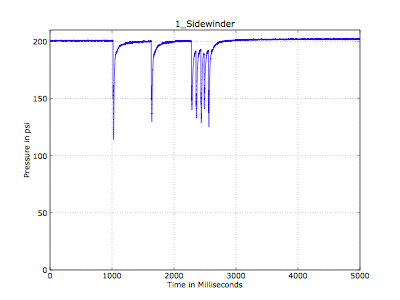

How to read the graphs
The
graphs show the pressure square inch (psi) as recorded by my equipment
over a given timespan represented by milliseconds (ms). For inline
regulators the the transducer is placed between the inline regulator
and valve chamber. Tank regulators are tested by placing the transducer
between the tank output and the inline.
The single shot graphs
are generated automatically so they are not always representative, for
instance the dynaflow since it has such an odd reading do not have
single shot.
Each large dip represents a shot, when you see several large dips in a row that is representative of several shots.

The above shows the results of a sidewinder test I did some time ago.
What
do these tests mean? These tests are meant to give a snapshot of
relative performance. Since I do this as a passtime I don't get to test
multiples of each regulator like a truly definitive test would, but
these tests should give an idea of performance between regulators.
How
do I tell a regulator does well, the depth of the dip or time to
reach starting? The time to starting point is the important item. It
does not matter how deep the dip is, only how long until it reaches
starting pressure.
Some regs do not reach starting point either
in single shot or multiple, what is going on there? Some regulators
were creeping, some simply did not perform well at all. IF a regulator
does not return to starting point in a string of firing then that means
you have a loss of FPS. I tested this with a shocker and at 15bps with
most regulators there was a 20-30fps drop of velocity.
More to come as I add it.